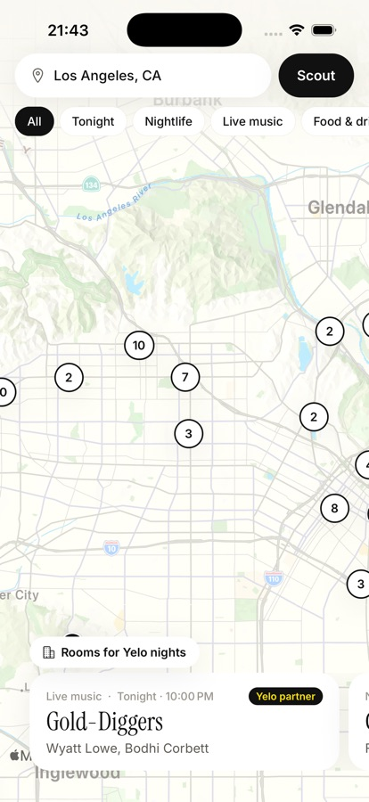

s Scout
Android · v1.0.0 · Nov 5, 2026
A prototype built for Yelo by Farhan Sadeek
Find tonight's spots. Ride there for less.
Scout searches the web every morning for events, parties and happy hours in New York and Los Angeles, puts them on one map, and shows what a ride there costs. Yelo's partner venues come first.
On a laptop? Point your Android phone's camera at this code to download Scout.

What's inside
Real screens from the app, with live data the agent found on the web this week.



Install in a minute
Android blocks apps from outside the Play Store by default, so it asks once.
- DownloadTap "Download for Android" on your phone, or scan the code above.
- Allow the installWhen Android asks, allow installs from your browser for this one file.
- Open ScoutAllow location if you want ride estimates. The map loads with this week's spots.
On an iPhone? There's no iOS download yet. Ask Farhan for a live demo.